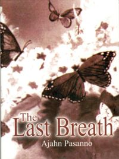

“Several years ago, I remember reading your little book The Last Breath about your experience supporting a Thai Buddhist at the death chamber [in San Quentin Prison]. I was very impressed how someone who as facing the last hours of his life still had sati and clear consciousness, practiced generosity, requested food for the monks, and was humble and kind. Would you mind telling us about Jay’s mindfulness again?” Answered by Ajahn Pasanno. [Dhamma books] [Ajahn Pasanno] [Prisons] [Death] [Mindfulness] [Generosity]
Story: Jay offers Ajahn Pasanno a meal in prison and makes sure that his family and the guards have an opportunity to hear Dhamma. [Happiness] [Hearing the true Dhamma] [Questions]
Story: Jay pays his last respects to Ajahn Pasanno. [Respect] [Equanimity] [Thai]